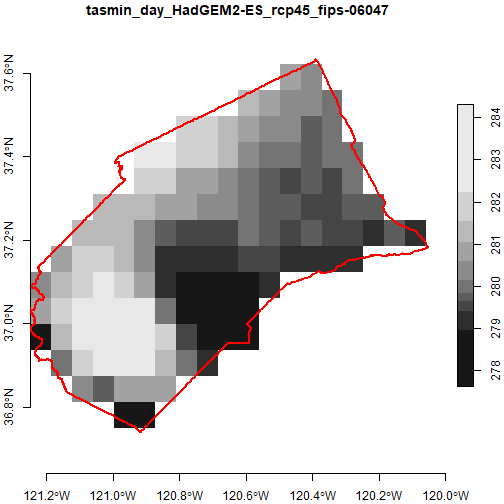
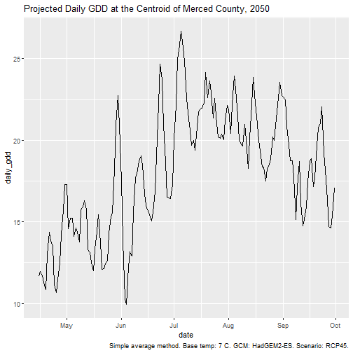
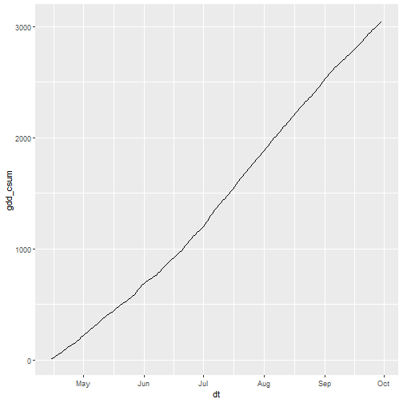

Rasters Part I: Download, Combine, Subset, and Compute Pixel Summaries
Source:vignettes/rasters-pt1.Rmd
rasters-pt1.RmdIntroduction
A great deal of climate data, including the bulk of data from Cal-Adapt, are inherently raster. The x and y dimensions represent space, the third dimension represents time, and the values of the ‘cells’ represent a climate variable like maximum temperature.
Raster data can be more challenging to work with than querying values for a specific location, because the files can be large and you need special tools to work with them. However if you are working with large areas, or your analysis calls for something out-of-the-box, then getting the data as rasters may be the way to go.
There are three commonly used ways to download raster data from Cal-Adapt:
NetCDF files for the full extent of the LOCA downscaled data are available for download from the Cal-Adapt Data Server. The NetCDF files will be not be discussed further here (but see Part III).
Rasters can be downloaded for specific variables and areas-of-interest using the Cal-Adapt Data Download Tool.
Rasters can be requested programmatically through the Cal-Adapt API.
{kind=link}
Downloading rasters is relatively easy with caladaptr.
The same API request object that you use to query values can be used to
download rasters by passing it to ca_getrst_stars(). This
function saves the rasters to disk as TIF files, with additional
‘sidecar’ files that store additional metadata that the TIF format can’t
handle. To do analysis, you next import the TIFs into R with
ca_stars_read(), where they come in as ‘stars’ objects.
From there, you can use functions from the stars package, which
is well-equipped to handle spatiotemporal arrays of raster data.
The rest of this vignette demonstrates how to download and work with Cal-Adapt data as rasters. Only the first 20% actually involves functions from caladpatr. The rest of the tutorial, and the bulk of most work flows, will use functions from stars to combine, subset, and analyze Cal-Adapt raster data.
Download Practice Data
To illustrate, we’ll download 20 years of daily temperature data for Merced County for 4 GCMs and 2 emissions scenarios. Start by loading the packages we’ll need:
library(caladaptr)
library(dplyr)
library(sf)
library(stars)
library(magrittr)
library(ggplot2)
library(lubridate)The FIPs code for Merced County is “06047”1. As always we first create an API request:
merced_cap <- ca_loc_aoipreset(type = "counties", idfld = "fips", idval = "06047") %>%
ca_gcm(gcms[1:4]) %>%
ca_period("day") %>%
ca_cvar(c("tasmin", "tasmax")) %>%
ca_scenario(c("rcp45", "rcp85")) %>%
ca_years(start = 2045, end = 2065)Note: normally when you construct an API request object for polygon
features, you’re supposed to include ca_options() to
specify how you want to spatially aggregate the climate values. This is
optional (and in fact ignored) for downloading rasters, because we are
not spatially aggregating anything. (For an example of spatially
aggregating raster data after it’s been downloaded, see Part III.)
It’s generally a good idea to plot your API request before using it to ensure you’ve got the right area:
plot(merced_cap, locagrid = TRUE, static = TRUE)
That all looks good. Next let’s download the data as TIFs by passing
merced_cap to ca_getrst_stars(). This function
does two important things:
downloads data and saves them as standard TIFs in
out_dir, andcreates a little ‘sidecar’ file for each TIF which saves additional metadata about the TIF (such as the GCM and emissions scenario).
data_dir <- tools::R_user_dir("caladaptr", which = "data")
merced_dir <- file.path(data_dir, "merced")
if (!file.exists(merced_dir)) dir.create(merced_dir, recursive = TRUE)
merced_stars_fn <- merced_cap %>%
ca_getrst_stars(out_dir = merced_dir, mask = TRUE, quiet = TRUE,
normalize_path = TRUE, overwrite = FALSE)We can see what was downloaded. Note for each TIF there is a sidecar rds file with additional metadata:
list.files(merced_dir)
#> [1] "mercd_bos_dist.geojson" "tasmax_day_CanESM2_rcp45_fips-06047.attr.rds"
#> [3] "tasmax_day_CanESM2_rcp45_fips-06047.tif" "tasmax_day_CanESM2_rcp85_fips-06047.attr.rds"
#> [5] "tasmax_day_CanESM2_rcp85_fips-06047.tif" "tasmax_day_CNRM-CM5_rcp45_fips-06047.attr.rds"
#> [7] "tasmax_day_CNRM-CM5_rcp45_fips-06047.tif" "tasmax_day_CNRM-CM5_rcp85_fips-06047.attr.rds"
#> [9] "tasmax_day_CNRM-CM5_rcp85_fips-06047.tif" "tasmax_day_HadGEM2-ES_rcp45_fips-06047.attr.rds"
#> [11] "tasmax_day_HadGEM2-ES_rcp45_fips-06047.tif" "tasmax_day_HadGEM2-ES_rcp85_fips-06047.attr.rds"
#> [13] "tasmax_day_HadGEM2-ES_rcp85_fips-06047.tif" "tasmax_day_MIROC5_rcp45_fips-06047.attr.rds"
#> [15] "tasmax_day_MIROC5_rcp45_fips-06047.tif" "tasmax_day_MIROC5_rcp85_fips-06047.attr.rds"
#> [17] "tasmax_day_MIROC5_rcp85_fips-06047.tif" "tasmin_day_CanESM2_rcp45_fips-06047.attr.rds"
#> [19] "tasmin_day_CanESM2_rcp45_fips-06047.tif" "tasmin_day_CanESM2_rcp85_fips-06047.attr.rds"
#> [21] "tasmin_day_CanESM2_rcp85_fips-06047.tif" "tasmin_day_CNRM-CM5_rcp45_fips-06047.attr.rds"
#> [23] "tasmin_day_CNRM-CM5_rcp45_fips-06047.tif" "tasmin_day_CNRM-CM5_rcp85_fips-06047.attr.rds"
#> [25] "tasmin_day_CNRM-CM5_rcp85_fips-06047.tif" "tasmin_day_HadGEM2-ES_rcp45_fips-06047.attr.rds"
#> [27] "tasmin_day_HadGEM2-ES_rcp45_fips-06047.tif" "tasmin_day_HadGEM2-ES_rcp85_fips-06047.attr.rds"
#> [29] "tasmin_day_HadGEM2-ES_rcp85_fips-06047.tif" "tasmin_day_MIROC5_rcp45_fips-06047.attr.rds"
#> [31] "tasmin_day_MIROC5_rcp45_fips-06047.tif" "tasmin_day_MIROC5_rcp85_fips-06047.attr.rds"
#> [33] "tasmin_day_MIROC5_rcp85_fips-06047.tif"Other useful arguments of ca_getrst_stars() include:
if
mask = TRUEand the area of interest is a polygon, pixels outside the area of interest will be givenNAvaluesif there are multiple locations in the API request,
merge_geoms = TRUEwill have it merge all the geoms together and return a single TIF that covers all locations (assuming they’re not too far apart and the extent of their union is small enough to be queried by the Cal-Adapt API). See also the vignette on downloading rasters for large areas.overwrite = FALSEtellsca_getrst_stars()to first see if the TIF file has already been downloaded (based on the automatically generated file name). This can help you re-run code very quickly because the files won’t have to be re-downloaded each time.
TIP: Managing downloaded TIF files. There is no way to
import Cal-Adapt data into R as rasters without first downloading TIF
files. To help you manage potentially large numbers of downloaded TIF
files, a good practice is to create separate data directories for each
location or project, and use the out_dir argument to put
the downloaded files where they need to be. If you have no desire to
keep the TIF files, you can download them to tempdir() and
then delete them programatically with unlink() (remember to
get the rds files also).
Read TIFs into R
The object returned by ca_getrst_stars() is a vector of
TIF file names. The easiest and recommended way to work with those
rasters in R is to import the TIFs with ca_read_stars().
You can read a whole bunch of TIFs with this function by passing it a
vector of TIF file names. ca_read_stars() returns a
list of stars objects attributed with additional
metadata from Cal-Adapt:
mercd_stars_lst <- merced_stars_fn %>% ca_stars_read()
class(mercd_stars_lst)
#> [1] "list"
length(mercd_stars_lst)
#> [1] 16Note: stars objects are read into memory by default. If your rasters
are really large, and/or you are getting a lot of climate variables,
there are ways of controlling what gets loaded and when. Passing
proxy = TRUE to ca_stars_read() will create a
list of ‘stars proxy’ objects, which are just like stars objects but
reading data from disk is postponed until needed. See the stars
documentation for details.
Let’s look at the elements of our stars list:
names(mercd_stars_lst)
#> [1] "tasmin_day_HadGEM2-ES_rcp45_fips-06047" "tasmax_day_HadGEM2-ES_rcp45_fips-06047" "tasmin_day_CNRM-CM5_rcp45_fips-06047"
#> [4] "tasmax_day_CNRM-CM5_rcp45_fips-06047" "tasmin_day_CanESM2_rcp45_fips-06047" "tasmax_day_CanESM2_rcp45_fips-06047"
#> [7] "tasmin_day_MIROC5_rcp45_fips-06047" "tasmax_day_MIROC5_rcp45_fips-06047" "tasmin_day_HadGEM2-ES_rcp85_fips-06047"
#> [10] "tasmax_day_HadGEM2-ES_rcp85_fips-06047" "tasmin_day_CNRM-CM5_rcp85_fips-06047" "tasmax_day_CNRM-CM5_rcp85_fips-06047"
#> [13] "tasmin_day_CanESM2_rcp85_fips-06047" "tasmax_day_CanESM2_rcp85_fips-06047" "tasmin_day_MIROC5_rcp85_fips-06047"
#> [16] "tasmax_day_MIROC5_rcp85_fips-06047"We can see from the above that our list contains 16 stars objects for different combos of GCM, emissions scenario, and climate variable.
For simplicity, the rest of this vignette will just use one or two of these stars objects. Normally you’d want to work with all your rasters, which may involve writing code loops to work through the list of stars objects. Below we’ll see how to generate an index for your stars objects to make code loops a little easier. Part II will introduce an even better way of processing multiple stars objects by combining them into a single six-dimensional climate data cube.
Explore a stars object
Let’s look at the properties of the first stars object in our list:
mercd_stars_lst[[1]]
#> stars object with 3 dimensions and 1 attribute
#> attribute(s), summary of first 1e+05 cells:
#> Min. 1st Qu. Median Mean 3rd Qu. Max. NA's
#> tasmin_day_HadGEM2-ES_rcp45... 266.4809 280.8343 285.1293 284.897 289.0701 302.3545 58748
#> dimension(s):
#> from to offset delta refsys point x/y
#> x 1 20 -121.2 0.0625 WGS 84 FALSE [x]
#> y 1 16 37.69 -0.0625 WGS 84 FALSE [y]
#> date 1 7670 2045-01-01 1 days Date NAWe see this stars object has 3 dimensions. The first two are columns (x) and rows (y), and the third one is date.
In general, the layers of rasters downloaded from Cal-Adapt represent different time periods. In this case, we asked for daily temperature data, so each of the 7670 layers represents the temperature for one day. The values of the cells are the minimum daily temperature (tasmin). There’s another stars object somewhere in our list with the corresponding daily maximum temperature (tasmax).
Let’s look at the cell values of the first stars object. We can use [[i]] notation to get the values of the ith attribute of a stars object (our stars objects only have one attribute so [[1]] works).
TIP: if you prefer dplyr functions, you can use
pull(1) instead of the second [[]] to get the
values.
mercd_stars_lst[[1]][[1]] %>% mode()
#> [1] "numeric"
mercd_stars_lst[[1]][[1]] %>% summary()
#> Min. 1st Qu. Median Mean 3rd Qu. Max. NA's
#> 263.7 279.6 284.2 284.3 289.1 306.7 1441960
# mercd_stars_lst[[1]] %>% pull(1) %>% summary()mode()tells us the values of each element (pixel) are numeric (R’s data type for double precision numbers).summary()reports the quantiles. These numbers are degrees Kelvin, which we would have known by reading the Cal-Adapt documentation. There are a lot of NA’s because we told it to mask the data, so any pixel that lies outside the boundary of Merced County will be full of NAs.
Subsetting stars objects
Before we go any further, we need to talk about subsetting stars
objects. We’ve already been subsetting a list of stars objects using
standard R list notation (e.g., mercd_stars_lst[[1]]). This
helps us grab an individual stars object of interest. But stars objects
can also be subsetted.
It’s helpful to remember that stars objects are essentially lists of arrays. Those arrays could be two-dimensional, like a traditional raster, or they could have 3 or more dimensions. We’ve already seen a 3-dimensional stars object, where the third dimension is time.
Subsetting stars objects along their dimensions is a common step in
analysis. Fortunately, the dimensions of stars objects are named (e.g.,
x, y, date). Hence when we subset along
dimensions, we can write filter expressions that use the name of
dimension to make it more readable (e.g.,
date > as.Date("2050-01-01"))
You can subset stars objects the dplyr verbs filter()
and slice(). For example if we just wanted to select 3 rows
and 3 columns, we could pass integers to slice(). Note
however we need to tell it which dimensions we’re slicing, using the
along argument:
mercd_stars_lst[[1]] %>%
slice(10:12, along = "x") %>%
slice(7:10, along = "y")
#> stars object with 3 dimensions and 1 attribute
#> attribute(s):
#> Min. 1st Qu. Median Mean 3rd Qu. Max.
#> tasmin_day_HadGEM2-ES_rcp45... 263.7848 279.8704 284.5147 284.5306 289.4701 300.6826
#> dimension(s):
#> from to offset delta refsys point x/y
#> x 10 12 -121.2 0.0625 WGS 84 FALSE [x]
#> y 7 10 37.69 -0.0625 WGS 84 FALSE [y]
#> date 1 7670 2045-01-01 1 days Date NAfilter() works similarly to slice(), but
uses logical values (or more commonly an expression that generates
logical values), rather than indices. If we wanted to further subset our
data to just values in January 2055, we could add a filter
expression:
mercd_stars_lst[[1]] %>%
slice(10:12, along = "x") %>%
slice(7:10, along = "y") %>%
filter(date >= as.Date("2055-01-01"), date <= as.Date("2055-01-31"))
#> stars object with 3 dimensions and 1 attribute
#> attribute(s):
#> Min. 1st Qu. Median Mean 3rd Qu. Max.
#> tasmin_day_HadGEM2-ES_rcp45... 268.9576 276.7619 279.2449 278.5362 281.6215 284.0545
#> dimension(s):
#> from to offset delta refsys point x/y
#> x 1 3 -120.7 0.0625 WGS 84 FALSE [x]
#> y 1 4 37.31 -0.0625 WGS 84 FALSE [y]
#> date 1 31 2055-01-01 1 days Date NAWe will see more example of subsetting with dplyr verbs below. One caveat of subsetting with dplyr is that it may not work if the stars object has only one row or column. Part II will show examples of subsetting with square bracket notation, the alternative to dplyr verbs.
Plotting stars objects
You would need a big sheet of paper to plot 7670 layers as facets. So we need to either combine the values (e.g., take the mean for each pixel), or plot a small number of them.
Let’s plot the first four dates of the first stars object in our
list. But since this raster has 3 dimensions, we have to tell it which
dimension to subsample using the along argument. Each day
will be plotted separately.
plot(mercd_stars_lst[[1]] %>% slice(index = 1:4, along = "date"),
axes = TRUE,
main = attributes(mercd_stars_lst[[1]])$ca_metadata$slug)
TIP: If you get an error message saying ‘figure margins too large’, it means either your plot window is too small (resize it in RStudio), or the stars object you’re trying to plot has way too many layers.
Overlay a vector feature
Overlaying a vector layer on top of plots reassures us that we have
the right area. Let’s include the county boundary in our plot. First we
get the Merced County boundary using ca_aoipreset_geom(),
and make sure its in geographic coordinates (epgs 4326) so we can
overlay it:
mercd_bnd_sf <- ca_aoipreset_geom("counties", quiet = TRUE) %>%
filter(fips == "06047") %>%
st_geometry() %>%
st_transform(4326)To plot them together, we’ll use the basic plot()
function, which the stars package has tailored to work with stars
rasters (including automatic resampling). To overlay vector layers using
plot(), we have to:
add
reset = FALSEto the first plot statement (so it doesn’t reset the axes after drawing the plot, which get a little funky because of the legend)include
add = TRUEin all subsequent plot statements
plot(mercd_stars_lst[[1]] %>% slice(index = 1, along = "date"), axes = TRUE, reset = FALSE)
plot(mercd_bnd_sf, border = "red", lwd = 2, axes = TRUE, add = TRUE)
Create a List Index
At this point we have a list with 16 stars objects. To help us figure
out which is which, we’ll create an index of them using
ca_index_starslist(). This function reads the extra
metadata for each stars object (saved in those sidecare files), and
returns a tibble:
(mercd_stars_tbl <- ca_stars_index(mercd_stars_lst))
#> # A tibble: 16 × 14
#> idx cvar units scenario gcm period slug livneh start end idfld idval rows cols
#> <int> <chr> <chr> <chr> <chr> <chr> <chr> <lgl> <chr> <chr> <chr> <chr> <dbl> <dbl>
#> 1 1 tasmin K rcp45 HadGEM2-ES day tasmin_day_HadGEM2-ES_rcp45 FALSE 2045-01-01 2065-12-31 fips 06047 20 16
#> 2 2 tasmax K rcp45 HadGEM2-ES day tasmax_day_HadGEM2-ES_rcp45 FALSE 2045-01-01 2065-12-31 fips 06047 20 16
#> 3 3 tasmin K rcp45 CNRM-CM5 day tasmin_day_CNRM-CM5_rcp45 FALSE 2045-01-01 2065-12-31 fips 06047 20 16
#> 4 4 tasmax K rcp45 CNRM-CM5 day tasmax_day_CNRM-CM5_rcp45 FALSE 2045-01-01 2065-12-31 fips 06047 20 16
#> 5 5 tasmin K rcp45 CanESM2 day tasmin_day_CanESM2_rcp45 FALSE 2045-01-01 2065-12-31 fips 06047 20 16
#> 6 6 tasmax K rcp45 CanESM2 day tasmax_day_CanESM2_rcp45 FALSE 2045-01-01 2065-12-31 fips 06047 20 16
#> 7 7 tasmin K rcp45 MIROC5 day tasmin_day_MIROC5_rcp45 FALSE 2045-01-01 2065-12-31 fips 06047 20 16
#> 8 8 tasmax K rcp45 MIROC5 day tasmax_day_MIROC5_rcp45 FALSE 2045-01-01 2065-12-31 fips 06047 20 16
#> 9 9 tasmin K rcp85 HadGEM2-ES day tasmin_day_HadGEM2-ES_rcp85 FALSE 2045-01-01 2065-12-31 fips 06047 20 16
#> 10 10 tasmax K rcp85 HadGEM2-ES day tasmax_day_HadGEM2-ES_rcp85 FALSE 2045-01-01 2065-12-31 fips 06047 20 16
#> 11 11 tasmin K rcp85 CNRM-CM5 day tasmin_day_CNRM-CM5_rcp85 FALSE 2045-01-01 2065-12-31 fips 06047 20 16
#> 12 12 tasmax K rcp85 CNRM-CM5 day tasmax_day_CNRM-CM5_rcp85 FALSE 2045-01-01 2065-12-31 fips 06047 20 16
#> 13 13 tasmin K rcp85 CanESM2 day tasmin_day_CanESM2_rcp85 FALSE 2045-01-01 2065-12-31 fips 06047 20 16
#> 14 14 tasmax K rcp85 CanESM2 day tasmax_day_CanESM2_rcp85 FALSE 2045-01-01 2065-12-31 fips 06047 20 16
#> 15 15 tasmin K rcp85 MIROC5 day tasmin_day_MIROC5_rcp85 FALSE 2045-01-01 2065-12-31 fips 06047 20 16
#> 16 16 tasmax K rcp85 MIROC5 day tasmax_day_MIROC5_rcp85 FALSE 2045-01-01 2065-12-31 fips 06047 20 16Subset the list by GCM & emissions scenario
To simplify things, we’ll only work with temperature data for one GCM and one emissions scenario. We can use our index tibble to extract the indices of the elements of our list that use the same GCM and scenario:
(lst_idx <- mercd_stars_tbl %>%
filter(gcm == "HadGEM2-ES", scenario == "rcp45") %>%
pull(idx))
#> [1] 1 2Now we can create a list of stars objects that use this GCM and emissions scenario. At this point, we’re still just working with a regular list.
We’ll subset the list using extract() (magrittr package)
which is the equivalent of subsetting a list with [].
one_gcm_scen_lst <- mercd_stars_lst %>% extract(lst_idx)
class(one_gcm_scen_lst)
#> [1] "list"
names(one_gcm_scen_lst)
#> [1] "tasmin_day_HadGEM2-ES_rcp45_fips-06047" "tasmax_day_HadGEM2-ES_rcp45_fips-06047"We now have a list with two stars objects. The two stars objects have
the same spatial area, dates, GCM and emission scenario. But one is
tasmin and the other is tasmax. Our goal is to
compute growing degree days, which is computed by
(tasmin + tasmax / 2) - basetemp. So we need to get
tasmin and tasmax in the same stars object as
a new dimension we’ll call ‘cvar’.
To get them into a single stars object, we’ll ‘merge’ them together
using c(). The stars package provides a special version of
c() which has been adapted for combining stars objects. The
stars c() has an optional ‘along’ argument, which is how we
tell it that we want the values from the two stars objects to be turned
into another dimension (as opposed to a 2nd attribute).
c(one_gcm_scen_lst[[1]], one_gcm_scen_lst[[2]], along = list(cvar = c("tasmin", "tasmax")))
#> stars object with 4 dimensions and 1 attribute
#> attribute(s), summary of first 1e+05 cells:
#> Min. 1st Qu. Median Mean 3rd Qu. Max. NA's
#> tasmin_day_HadGEM2-ES_rcp45... 266.4809 280.8343 285.1293 284.897 289.0701 302.3545 58748
#> dimension(s):
#> from to offset delta refsys point values x/y
#> x 1 20 -121.2 0.0625 WGS 84 FALSE NULL [x]
#> y 1 16 37.69 -0.0625 WGS 84 FALSE NULL [y]
#> date 1 7670 2045-01-01 1 days Date NA NULL
#> cvar 1 2 NA NA NA NA tasmin, tasmaxNote the appearance of a new attribute with two values.
That does the job, but we can do better. In the next chunk we’ll modify the above by:
- calling
c()as part of ado.call(which is programmatically more flexible) - programatically create the values for the new dimension, which we
pass as named list to
along - tack on
setNames()at the end to rename the attribute to something easier on the eye
## Get the names of the climate variables in these two stars objects from the index tibble
(cvars_these_two <- mercd_stars_tbl %>%
slice(lst_idx) %>%
pull(cvar))
#> [1] "tasmin" "tasmax"
## Combine the two stars objects into one
(tasmin_tasmax_combined <- do.call(c, c(one_gcm_scen_lst,
list(along = list(cvar = cvars_these_two)))) %>%
setNames("val"))
#> stars object with 4 dimensions and 1 attribute
#> attribute(s), summary of first 1e+05 cells:
#> Min. 1st Qu. Median Mean 3rd Qu. Max. NA's
#> val 266.4809 280.8343 285.1293 284.897 289.0701 302.3545 58748
#> dimension(s):
#> from to offset delta refsys point values x/y
#> x 1 20 -121.2 0.0625 WGS 84 FALSE NULL [x]
#> y 1 16 37.69 -0.0625 WGS 84 FALSE NULL [y]
#> date 1 7670 2045-01-01 1 days Date NA NULL
#> cvar 1 2 NA NA NA NA tasmin, tasmaxTime Filters
Date Filter
To filter by date, we can write a filter expression that references the ‘date’ dimension. The following will return just days between March 15 and April 14, 2050 (which you can verify by looking at the range of the date dimension).
tasmin_tasmax_combined %>% filter(date >= as.Date("2050-03-15"), date <= as.Date("2050-04-14"))
#> stars object with 4 dimensions and 1 attribute
#> attribute(s):
#> Min. 1st Qu. Median Mean 3rd Qu. Max. NA's
#> val 270.9343 278.897 284.9836 287.165 295.5038 303.8904 11656
#> dimension(s):
#> from to offset delta refsys point values x/y
#> x 1 20 -121.2 0.0625 WGS 84 FALSE NULL [x]
#> y 1 16 37.69 -0.0625 WGS 84 FALSE NULL [y]
#> date 1 31 2050-03-15 1 days Date NA NULL
#> cvar 1 2 NA NA NA NA tasmin, tasmaxMonth Filter
In a similar fashion, we can use lubridate::month() to
just get the days in March:
(tasmin_tasmax_march <- tasmin_tasmax_combined %>% filter(month(date) == 3))
#> stars object with 4 dimensions and 1 attribute
#> attribute(s):
#> Min. 1st Qu. Median Mean 3rd Qu. Max. NA's
#> val 267.8101 280.1277 286.4186 287.2461 294.2314 308.7601 244776
#> dimension(s):
#> from to offset delta refsys point values x/y
#> x 1 20 -121.2 0.0625 WGS 84 FALSE NULL [x]
#> y 1 16 37.69 -0.0625 WGS 84 FALSE NULL [y]
#> date 1 651 NA NA Date NA 2045-03-01,...,2065-03-31
#> cvar 1 2 NA NA NA NA tasmin, tasmaxNote how the result includes the actual date values for the dimension
fields (which is critical actually because they’re not regularly
spaced). We can visually verify we only got March values by looking at a
random sample of the date values. st_get_dimension_values()
return the values for a dimension:
st_get_dimension_values(tasmin_tasmax_march, which = "date") %>% sample(20)
#> [1] "2047-03-28" "2062-03-20" "2058-03-27" "2052-03-31" "2045-03-21" "2059-03-05" "2046-03-13" "2061-03-16" "2061-03-22" "2063-03-20"
#> [11] "2056-03-30" "2055-03-13" "2057-03-22" "2063-03-22" "2063-03-01" "2050-03-10" "2052-03-04" "2049-03-24" "2046-03-28" "2065-03-08"Julian Day Filter
We can also filter on the day-of-the-year (Julian day). First get the
Julian day for the start and end dates using
lubridate::yday():
(jday_start <- yday(as.Date("2021-04-15")))
#> [1] 105
(jday_end <- yday(as.Date("2021-10-01")))
#> [1] 274Filter our daily temperature stars object using these Julian dates:
(tasmin_tasmax_ag_season <- tasmin_tasmax_combined %>%
filter(yday(date) >= jday_start, yday(date) <= jday_end))
#> stars object with 4 dimensions and 1 attribute
#> attribute(s), summary of first 1e+05 cells:
#> Min. 1st Qu. Median Mean 3rd Qu. Max. NA's
#> val 274.1193 285.6643 288.6104 288.2912 291.05 302.3545 58748
#> dimension(s):
#> from to offset delta refsys point values x/y
#> x 1 20 -121.2 0.0625 WGS 84 FALSE NULL [x]
#> y 1 16 37.69 -0.0625 WGS 84 FALSE NULL [y]
#> date 1 3570 NA NA Date NA 2045-04-15,...,2065-10-01
#> cvar 1 2 NA NA NA NA tasmin, tasmaxTo verify, let’s look at the first few values of the date dimension:
tasmin_tasmax_ag_season %>% st_get_dimension_values("date") %>% head()
#> [1] "2045-04-15" "2045-04-16" "2045-04-17" "2045-04-18" "2045-04-19" "2045-04-20"Compute GDD
Bringing this all together, we’ll next compute growing degree days (GDD) for one season, one GCM, and one emission scenario. Accumulated GDD is commonly used in agriculture to predict when tree crops will be ready to harvest (amongst other things). The are many flavors of GDD but we’ll use a basic formula:
Where basetemp is crop-specific (we’ll use 7 degree Celsius which is the base temperature for Pistachios).
Prepare one season of daily min/max in Celsius
First, let’s filter tasmin_tasmax_combined down to one
growing season starting from mid-April (roughly when Pistachio bloom
occurs):
season_start <- as.Date("2050-04-15")
season_end <- as.Date("2050-09-30")
(one_season_kelvin <- tasmin_tasmax_combined %>%
filter(date >= season_start, date <= season_end))
#> stars object with 4 dimensions and 1 attribute
#> attribute(s):
#> Min. 1st Qu. Median Mean 3rd Qu. Max. NA's
#> val 274.7148 288.101 295.9296 297.4148 307.0851 317.9881 63544
#> dimension(s):
#> from to offset delta refsys point values x/y
#> x 1 20 -121.2 0.0625 WGS 84 FALSE NULL [x]
#> y 1 16 37.69 -0.0625 WGS 84 FALSE NULL [y]
#> date 1 169 2050-04-15 1 days Date NA NULL
#> cvar 1 2 NA NA NA NA tasmin, tasmaxWe need to convert the values from Kelvin to Celsius, which we can do by making a copy and then subtracting 273 from the first array:
one_season_c <- one_season_kelvin
one_season_c[[1]] <- one_season_c[[1]] - 273.15
one_season_c
#> stars object with 4 dimensions and 1 attribute
#> attribute(s):
#> Min. 1st Qu. Median Mean 3rd Qu. Max. NA's
#> val 1.564752 14.95095 22.77963 24.26485 33.93511 44.8381 63544
#> dimension(s):
#> from to offset delta refsys point values x/y
#> x 1 20 -121.2 0.0625 WGS 84 FALSE NULL [x]
#> y 1 16 37.69 -0.0625 WGS 84 FALSE NULL [y]
#> date 1 169 2050-04-15 1 days Date NA NULL
#> cvar 1 2 NA NA NA NA tasmin, tasmaxCompute Daily GDD
Now we can compute GDD. We start by writing the function that takes an argument x, which will be numeric vector of length 2 containing the min and max temp for a day, plus the basetemp.
gdd_daily <- function(x, basetemp) {((x[1] + x[2]) / 2) - basetemp}Caveat: this simple GDD function doesn’t check for negative GDD. Negative GDD values are generally changed to 0 because plant and insect growth generally do not go backwards.
We call our custom function in st_apply(). Our function
will be called for each element of the dimensions we loop over given in
MARGIN. Below, we’re looping over x, y, and date. That leaves cvar, a
dimension which has a range of two. This means our GDD function will
receive a numeric vector of length two (min and max temp). The character
value passed with .fname will become the name of the new
attribute.
(one_season_gdd_dly <- one_season_c %>%
st_apply(MARGIN = c("x", "y", "date"), FUN = gdd_daily, basetemp = 7, .fname = "gdd_dly"))
#> stars object with 3 dimensions and 1 attribute
#> attribute(s):
#> Min. 1st Qu. Median Mean 3rd Qu. Max. NA's
#> gdd_dly 4.349542 14.2549 17.41654 17.26485 20.50904 27.19601 31772
#> dimension(s):
#> from to offset delta refsys point x/y
#> x 1 20 -121.2 0.0625 WGS 84 FALSE [x]
#> y 1 16 37.69 -0.0625 WGS 84 FALSE [y]
#> date 1 169 2050-04-15 1 days Date NA
TIP: An alternative way of writing our GDD function is
to make separate arguments for tasmin and tasmax. This can be a lot
faster (4x as fast in this case). Separating the arguments is viable
in this case because we know that exactly two values will be passed to
the function. If we were passing a big array of values it wouldn’t
possible. If your aggregation function expects the input array elements
as separate arguments, you also have to add
single_arg = FALSE to st_apply(). Example:
gdd_daily_2args <- function(x1, x2, basetemp) {((x1 + x2) / 2) - basetemp}
(one_season_c %>% st_apply(MARGIN = c("x", "y", "date"),
FUN = gdd_daily_2args, basetemp = 7,
.fname = "gdd", single_arg = FALSE))
#> stars object with 3 dimensions and 1 attribute
#> attribute(s):
#> Min. 1st Qu. Median Mean 3rd Qu. Max. NA's
#> gdd 4.349542 14.2549 17.41654 17.26485 20.50904 27.19601 31772
#> dimension(s):
#> from to offset delta refsys point x/y
#> x 1 20 -121.2 0.0625 WGS 84 FALSE [x]
#> y 1 16 37.69 -0.0625 WGS 84 FALSE [y]
#> date 1 169 2050-04-15 1 days Date NAExplore results
Let’s drill down and get the GDD values for a point in the center of the county:
(mercd_ctr_sf <- st_centroid(mercd_bnd_sf))
#> Geometry set for 1 feature
#> Geometry type: POINT
#> Dimension: XY
#> Bounding box: xmin: -120.7186 ymin: 37.19131 xmax: -120.7186 ymax: 37.19131
#> Geodetic CRS: WGS 84
#> POINT (-120.7186 37.19131)Get the values at that location using st_extract():
(gdd_ctr_stars <- one_season_gdd_dly %>% st_extract(mercd_ctr_sf))
#> stars object with 2 dimensions and 1 attribute
#> attribute(s):
#> Min. 1st Qu. Median Mean 3rd Qu. Max.
#> gdd_dly 9.925531 15.15791 18.35623 18.03055 20.98876 26.69079
#> dimension(s):
#> from to offset delta refsys point values
#> geometry 1 1 NA NA WGS 84 TRUE POINT (-120.7 37.19)
#> date 1 169 2050-04-15 1 days Date NA NULLLook closely at the results. st_extract() returned an
array where the first dimension represents not x values (i.e., columns
in a raster), but vector features (in this case points). Dimension two
(usually is reserved for ‘y’) now represents dates, and the values of
the elements represent the daily GDD. There is no 3rd dimension. Hence
when we pull out the array with [[ ]] we should expect a two-dimensional
array where the rows represent features, the columns represent days, and
the values to represent GDD:
dim(gdd_ctr_stars[[1]])
#> date
#> 1 169
summary(gdd_ctr_stars[[1]][1,])
#> Min. 1st Qu. Median Mean 3rd Qu. Max.
#> 9.926 15.158 18.356 18.031 20.989 26.691Using our knowledge of how the results of st_extract()
are structured, we can make a scatter plot of the daily GDD over
time:
gdd_ctr_dates <- gdd_ctr_stars %>% st_get_dimension_values("date")
str(gdd_ctr_dates)
#> Date[1:169], format: "2050-04-15" "2050-04-16" "2050-04-17" "2050-04-18" "2050-04-19" "2050-04-20" "2050-04-21" "2050-04-22" "2050-04-23" "2050-04-24" ...
ggplot(data.frame(date = gdd_ctr_dates, daily_gdd = gdd_ctr_stars[[1]][1,]),
aes(x = date, y = daily_gdd)) +
geom_line() +
labs(title = "Projected Daily GDD at the Centroid of Merced County, 2050",
caption = "Simple average method. Base temp: 7 C. GCM: HadGEM2-ES. Scenario: RCP45.")
Accumulated GDD
Next, we compute the accumulated GDD by looping over x and y, and
passing the remaining dimensions (in this case 169 values of daily GDD)
to cumsum(). For each pixel, we’ll get back 169 values that
will be placed in a new dimension we’ll call ‘date’. While we’re at it
we can also set the name of the attribute (values) to ‘gdd_csum’.
one_season_gdd_csum <- one_season_gdd_dly %>%
st_apply(c("x", "y"), cumsum, .fname = "date") %>%
setNames("gdd_csum")
one_season_gdd_csum
#> stars object with 3 dimensions and 1 attribute
#> attribute(s):
#> Min. 1st Qu. Median Mean 3rd Qu. Max. NA's
#> gdd_csum 6.511469 548.138 1285.735 1365.29 2152.067 3102.194 31772
#> dimension(s):
#> from to offset delta refsys point x/y
#> date 1 169 NA NA NA NA
#> x 1 20 -121.2 0.0625 WGS 84 FALSE [x]
#> y 1 16 37.69 -0.0625 WGS 84 FALSE [y]This worked but we lost the properties of the new dimension that was
returned by st_apply(). We know the new dimension still
represents the original dates, so we can copy over the the ‘date’
dimension from one_season_gdd_dly:
st_dimensions(one_season_gdd_csum)$date <- st_dimensions(one_season_gdd_dly)$date
one_season_gdd_csum
#> stars object with 3 dimensions and 1 attribute
#> attribute(s):
#> Min. 1st Qu. Median Mean 3rd Qu. Max. NA's
#> gdd_csum 6.511469 548.138 1285.735 1365.29 2152.067 3102.194 31772
#> dimension(s):
#> from to offset delta refsys point x/y
#> date 1 169 2050-04-15 1 days Date NA
#> x 1 20 -121.2 0.0625 WGS 84 FALSE [x]
#> y 1 16 37.69 -0.0625 WGS 84 FALSE [y]To verify, we can get the values for one pixel and plot them:
one_pt_gddcsum <- one_season_gdd_csum %>%
slice(10, along = "x") %>%
slice(8, along = "y") %>%
pull(gdd_csum)
ggplot(data.frame(dt = one_season_gdd_csum %>% st_get_dimension_values("date"),
gdd_csum = one_pt_gddcsum),
aes(x = dt, y = gdd_csum)) +
geom_line()
That looks right!
Plot a Accumulated GDD Surface
Plot what GDD looks like on July 15, 2050:
plot(one_season_gdd_csum %>%
filter(date == as.Date("2050-07-15")),
main = "Projected Accumulated GDD July 15, 2050",
reset = FALSE)
## Add some details about the data
text(-121.2600, 37.61369, "GDD start: April 15, 2050\nGCM: HadGEM2-ES\nScenario: RCP45\nBasetemp: 7 C", adj = c(0,1))
Save to disk
You can save stars objects as TIF files with
write_stars():
tif_fn <- file.path(tempdir(), "merced_2050_cum-gdd-base7.tif")
# write_stars(one_season_gdd_csum, dsn = tif_fn)Note however that TIF files are limited to 3-dimensional rasters (x,
y, and layers), and in general you can’t save the properties of the
layers, such as the date value (this is precisely why
ca_getrst_stars() writes sidecar files when downloading the
TIFs).
An alternative to saving your stars objects as TIFs would be to save
it as a regular R object using save() or
saveRDS(). This will record the stars object completely,
with the limitation that these formats are only useful for bring the
objects back into R. You could also simply save your code and recreate
the stars objects on the fly by re-importing the TIF files you
downloaded from Cal-Adapt.
netCDF is a much better file format for multidimensional spatiotemporal arrays. The stars package is not equipped to directly save stars objects to netCDF (but help may be on the way).
How many frost days per year?
Next, let’s count up number of frost days, which we’ll approximate as a day when the minimum temperature is <= 0 °C (for a more robust way to measure frost exposure, see Parker et al 2020).
This task doesn’t require doing anything fancy with stars. We already have the projected minimum daily temperature for every pixel in Merced County for 20 years. We just have to check when it is below 0. However we’ll have to get a little creative in extracting information from our stars object, so we wind up with a summary of the number of frozen pixels per year.
First we make a copy of the first stars object (which records tasmin) from our list:
(tmin_allyrs_stars <- mercd_stars_lst[[1]])
#> stars object with 3 dimensions and 1 attribute
#> attribute(s), summary of first 1e+05 cells:
#> Min. 1st Qu. Median Mean 3rd Qu. Max. NA's
#> tasmin_day_HadGEM2-ES_rcp45... 266.4809 280.8343 285.1293 284.897 289.0701 302.3545 58748
#> dimension(s):
#> from to offset delta refsys point x/y
#> x 1 20 -121.2 0.0625 WGS 84 FALSE [x]
#> y 1 16 37.69 -0.0625 WGS 84 FALSE [y]
#> date 1 7670 2045-01-01 1 days Date NAIdentifying which pixels fall below freezing is the easy part. The following will take the minimum daily temperature arrays and them into TRUE if the temperature is below 273 (equivalent to 0 °C), otherwise FALSE:
(frost_allyrs_stars <- tmin_allyrs_stars <= 273)
#> stars object with 3 dimensions and 1 attribute
#> attribute(s), summary of first 1e+05 cells:
#> tasmin_day_HadGEM2-ES_rcp45...
#> Mode :logical
#> FALSE:40233
#> TRUE :1019
#> NA's :58748
#> dimension(s):
#> from to offset delta refsys point x/y
#> x 1 20 -121.2 0.0625 WGS 84 FALSE [x]
#> y 1 16 37.69 -0.0625 WGS 84 FALSE [y]
#> date 1 7670 2045-01-01 1 days Date NAFinding the total number of pixels-days below freezing is also pretty
easy. We simply grab all the TRUE/FALSE values with pull(1)
(or [[1]]), and sum them up. When you add up TRUE/FALSE
values, the TRUEs become 1 and the FALSEs become 0. Or we can feed them
into table():
But that doesn’t really answer our question. We want to look at the number of frozen pixels per year, not the grand total for 20 years. To generate a yearly summary we need a expression that does four things:
- loops over the years
- pulls out the daily rasters for a specific year
- sums up the number of frozen pixels
- stores the results in a data frame
First we get the years:
(tmin_allyrs_stars %>% st_get_dimension_values("date") %>% year() %>% unique() -> years_all)
#> [1] 2045 2046 2047 2048 2049 2050 2051 2052 2053 2054 2055 2056 2057 2058 2059 2060 2061 2062 2063 2064 2065Now we can write a little loop that builds a data frame of the number of frozen pixels per year:
year_numfrost_df <- NULL
for (yr in years_all) {
year_numfrost_df <- year_numfrost_df %>%
rbind(data.frame(year = yr,
num_frozen_pixels = frost_allyrs_stars %>% filter(year(date) == yr) %>%
pull() %>% sum(na.rm = TRUE)))
}
year_numfrost_df
#> year num_frozen_pixels
#> 1 2045 1345
#> 2 2046 749
#> 3 2047 2134
#> 4 2048 3286
#> 5 2049 592
#> 6 2050 453
#> 7 2051 1291
#> 8 2052 538
#> 9 2053 1491
#> 10 2054 1966
#> 11 2055 2037
#> 12 2056 1424
#> 13 2057 1132
#> 14 2058 1473
#> 15 2059 1021
#> 16 2060 2121
#> 17 2061 1335
#> 18 2062 314
#> 19 2063 889
#> 20 2064 380
#> 21 2065 555A more compact way of doing this is:
do.call(rbind, lapply(years_all, function(yr)
data.frame(year = yr,
frost_pixel_days = frost_allyrs_stars %>% filter(year(date) == yr) %>%
pull() %>% sum(na.rm = TRUE))
))
#> year frost_pixel_days
#> 1 2045 1345
#> 2 2046 749
#> 3 2047 2134
#> 4 2048 3286
#> 5 2049 592
#> 6 2050 453
#> 7 2051 1291
#> 8 2052 538
#> 9 2053 1491
#> 10 2054 1966
#> 11 2055 2037
#> 12 2056 1424
#> 13 2057 1132
#> 14 2058 1473
#> 15 2059 1021
#> 16 2060 2121
#> 17 2061 1335
#> 18 2062 314
#> 19 2063 889
#> 20 2064 380
#> 21 2065 555